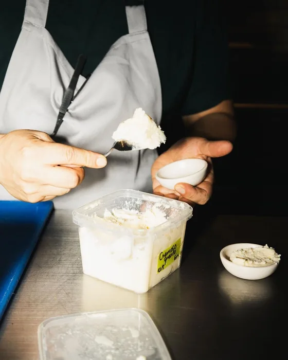
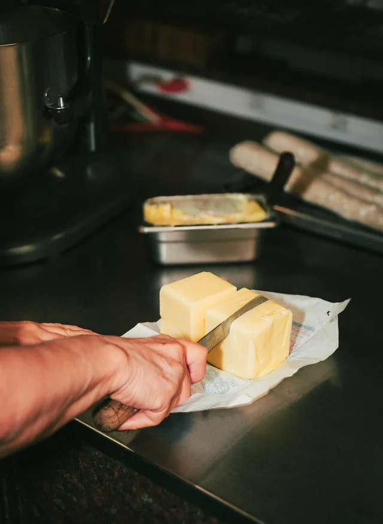

L’Essentiel
2 à 4 personnes
Environ 450 g
Dès 28 €
Crèmerie Fromagerie - depuis 2001

Depuis plus de quinze ans, Olivier et Rose sélectionnent les fromages au fil des saisons - et des rencontres. Chaque plateau est composé selon vos envies, votre table & le moment à partager. Des produits de caractère, un conseil sincère ; et le plaisir, tout simple, de bien manger.
| Jour et moment | Ville |
|---|---|
| MardiMatin | Mont-de-Marsan |
| MercrediMatin | Morcenx |
| JeudiMatin | Lit-et-Mixe |
| JeudiÀ partir de 17h | Magescq |
| VendrediMatin | Mimizan |
| SamediMatin | Mont-de-Marsan |
| DimancheMatin | Léon* |
* Été et vacances scolaires.
L’Essentiel
2 à 4 personnes
Environ 450 g
Dès 28 €
L’Héritage
4 à 6 personnes
Environ 700 g
Dès 45 €
L’ExceptionLe Plateau Terroir
8 à 10 personnes
Environ 1,2 kg
Dès 75 €
Pour 4 à 6 personnes,
Environ 700g,
À partir de 45€.
Pour commander, appelez-nous directement en indiquant le plateau choisi, le nombre de convives et la date souhaitée. Olivier et Rose préparent chaque composition sur demande, au plus près de vos envies, de l’occasion & des fromages du moment. Il ne vous reste ensuite qu’à convenir d’un horaire - et à venir récupérer votre plateau à Magescq.
Retrait sur rendez-vous,
au 18 Rue des Résiniers, 40140 Magescq.
Contactez Nous au 06.85.92.02.99,
ou par mail lepalaisdufromage@orange.fr
